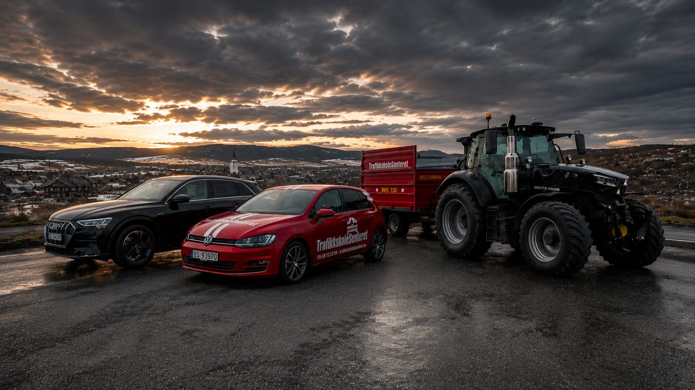
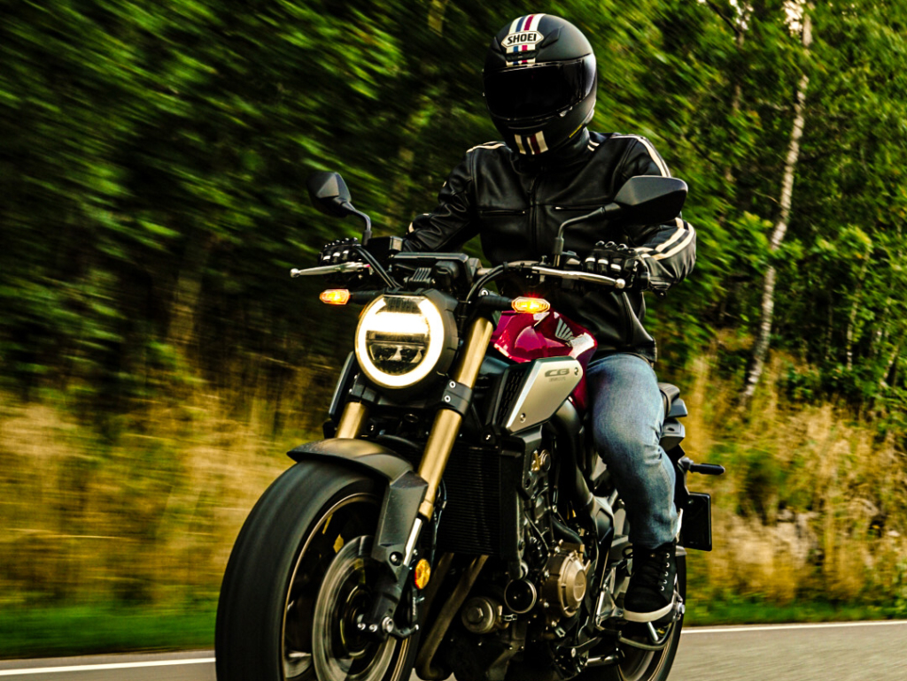
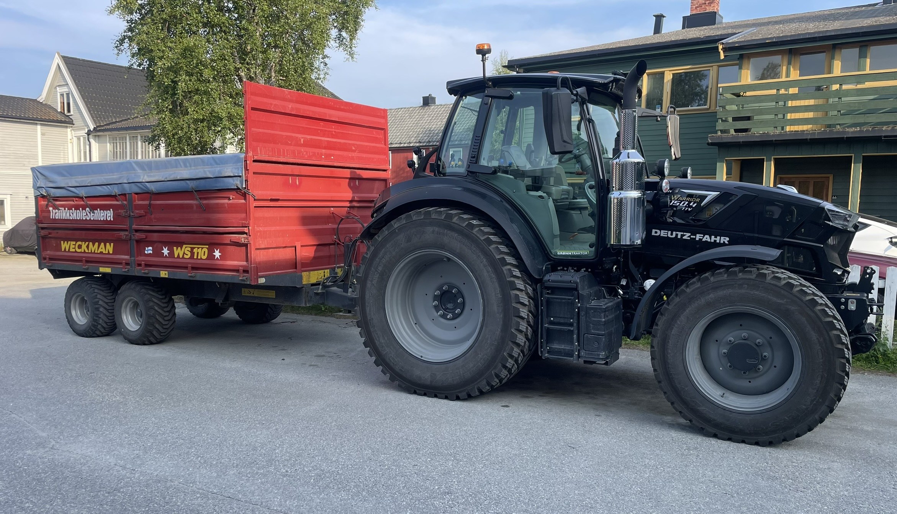
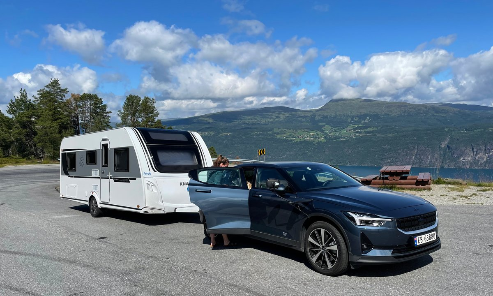
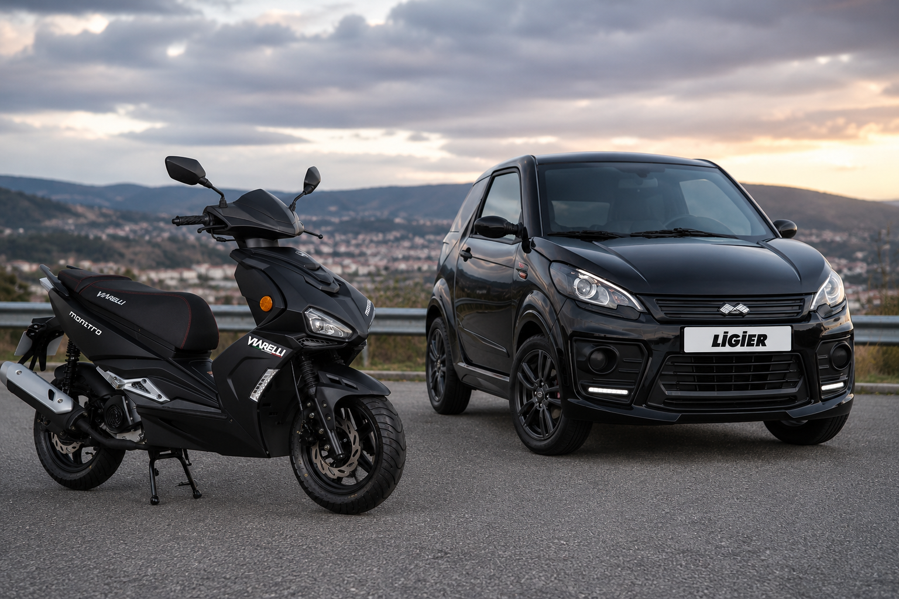

Bil – automat eller manuell
Personbil, automat eller manuell. Vi tar deg hele veien fra første kjøretime til bestått førerprøve, med personlig trafikklærer.
- Fra 18 år
- Kjøretime fra 900 kr
- Tynset & Røros
Sikker og effektiv opplæring, tilpasset deg – for trygge og ansvarsfulle trafikanter. Bil, MC, traktor og moped i Tynset og på Røros.
Vi tar deg hele veien – enten det er første bil, motorsykkel til sommeren eller traktor til gården. Alt på ett sted, med lærere som kjenner distriktet.

Personbil, automat eller manuell. Vi tar deg hele veien fra første kjøretime til bestått førerprøve, med personlig trafikklærer.

Lett (A1), mellomtung (A2) og tung motorsykkel (A). Grunnkurs og sikkerhetskurs på bane og veg – MC er en av spesialitetene våre.

Traktor med og uten tilhenger – nyttig på gård, i sommerjobb og i arbeid. Du øver på vår egen traktor med tilhenger.

For tilhenger over 750 kg og tyngre vogntog – til hytta, hesten, båten eller jobben. Vi kjører også utvidelse til B96.

Tohjuls moped (AM146) og mopedbil (AM147). For mange den aller første lappen – fra du fyller 16 år.

Det obligatoriske første steget mot førerkortet – inkludert førstehjelp og trafikant i mørket. Kan tas fra du fyller 15 år.
Vi møter deg gjerne der det er mest praktisk. Bil, tilhenger og trafikalt grunnkurs tilbys både i Tynset og på Røros – øvrige klasser ved kontoret i Tynset. Usikker på hva som passer deg? Ta kontakt, så finner vi riktig klasse for deg.
Du betaler kun for det du trenger. Her er kjøretimeprisen for noen av klassene – se full prisliste for kurs og obligatorisk opplæring.
Kjøretimeprisen varierer med klasse. Full prisliste med kurs, obligatorisk opplæring og øvrige klasser finner du på prissiden – gebyrer hos Statens vegvesen kommer i tillegg.
Trafikalt grunnkurs, trafikant i mørket og førstehjelp i Tynset. Du trenger ikke velge dato – meld deg rett på kurset som passer deg.
Laster kommende kurs …
Vi tilbyr klasse B (bil – automat og manuell), klasse A/A1/A2 (motorsykkel), klasse T (traktor), klasse BE og B96 (bil med tilhenger), moped (klasse AM) og trafikalt grunnkurs. Vi holder til i Tynset.
Vi er midt i Tynset sentrum, i Parkveien 14 (2500 Tynset), med egne teori- og kursrom. På Røros tilbyr vi bil (klasse B og automat), tilhenger (BE) og trafikalt grunnkurs. Vi møter deg gjerne der det passer best – ta kontakt på 90 74 47 45 eller steinjronningen@gmail.com, så avtaler vi oppstart.
Ta kontakt via «Meld deg på»-skjemaet, send en SMS eller ring – så registrerer vi deg som elev og setter deg opp på kjøretimer og kurs. Du booker ikke selv; vi finner et tidspunkt som passer. Send SMS eller ring 90 74 47 45 eller 90 91 75 42.
Trafikalt grunnkurs og moped (AM) kan tas fra 15 år, øvelseskjøring på bil fra 16 år, og lett motorsykkel (A1) fra 16 år. Førerkort i klasse B får du tidligst ved fylte 18 år. Ta kontakt, så finner vi ut hva som passer for deg.
Ja. Vi tilbyr opplæring på både automat og manuell. Med automat slipper du clutch og gir og kan bruke mer fokus på trafikken, mens manuell lar deg kjøre alle biler.
Ja. Vi har elever fra hele distriktet – Tynset, Røros, Alvdal, Tolga, Folldal, Os og Rendalen. Vi er vant til å tilpasse opplæringen for deg som har et stykke å kjøre.
Meld deg på i dag, så finner vi et opplegg som passer deg – enten du skal ta bil, motorsykkel, traktor eller moped.